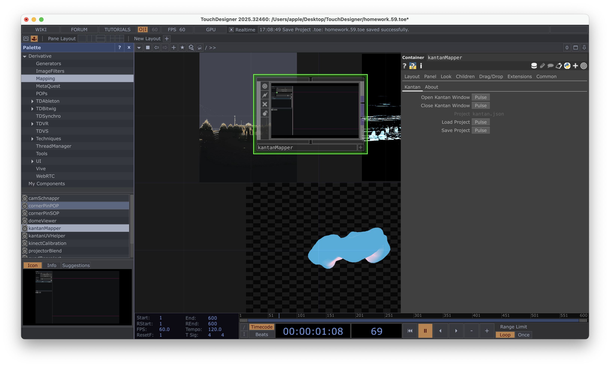
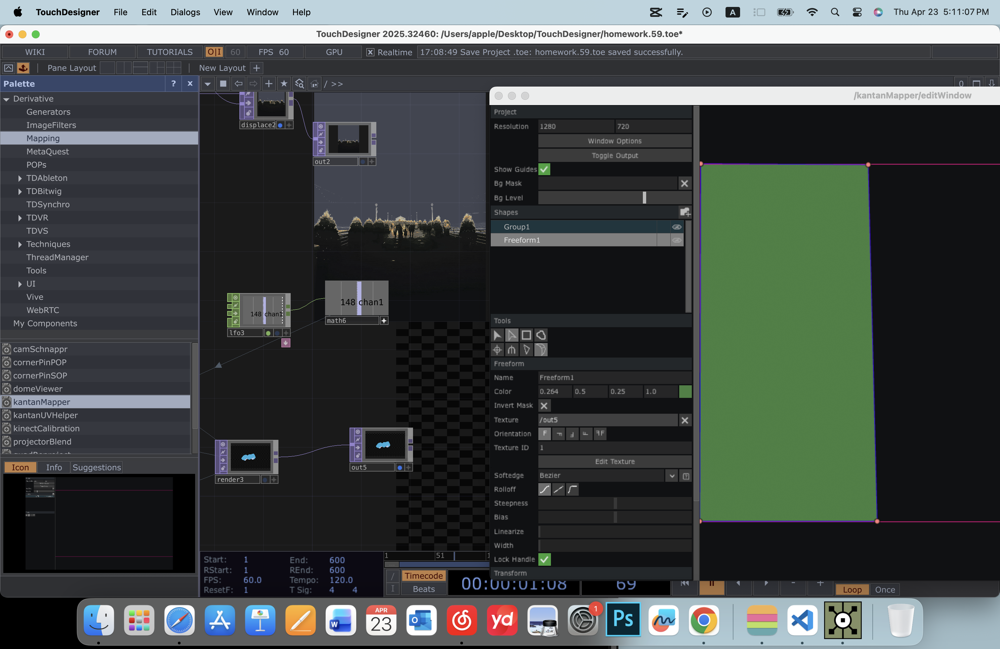

Projected Tides
A projection mapping installation using generative visuals created in TouchDesigner
TouchDesigner Experiments


Process

light + camera + geometry need to all present to connect to render

LFO drives transform xyz to create scaling motion

twist effect + LFO creates rotation deformation

combining two LFOs for more complex motion

replacing torus with sphere

hexagon shape from circle + composite

layering geometry for pattern

connect circle with a noise to create a star like background, then composite with the hexagon pattern

add a LFO to the rotation of transform to create motion, and a displace to create a shooting star effect

use image as a base to try edge and ramp effect

audiofilein to connect with the "passes"in common of diplace,change UV weight and offset data, also adding ramp to change effects

add noise with a pointtransform, and a LFO in the translate z to create a flying through space effect

in edge TOP, output edge only and composite with the original image

alligator noise type looks a bubble on the surface of the image, connect it with a audio to make it react with the music
Final Projection
TouchDesigner Effects


KantanMapper Process

add a KantanMapper, find it in the Palette - Mapping - kantaMapper - kantan - open kantan window

in tool bar section, use the rectangle tool to define the projection area, freeform can be used for more complex shapes

adding the output"out" of the projects wanted to project to the texture, rememeber to play the timeline before adding in, otherwise it won't let you add it

click on the "x" then a ✅will appear，the the projects will shown in the frames

toggle output to the surface and adjust the shape of frame